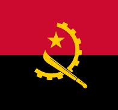
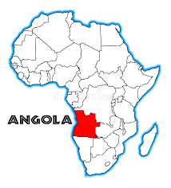
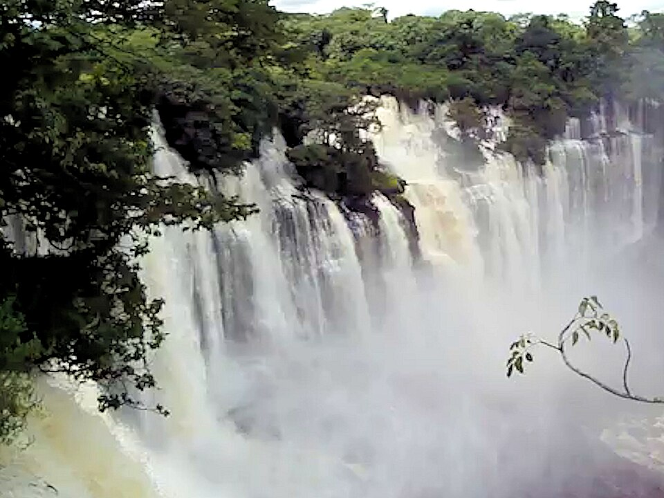
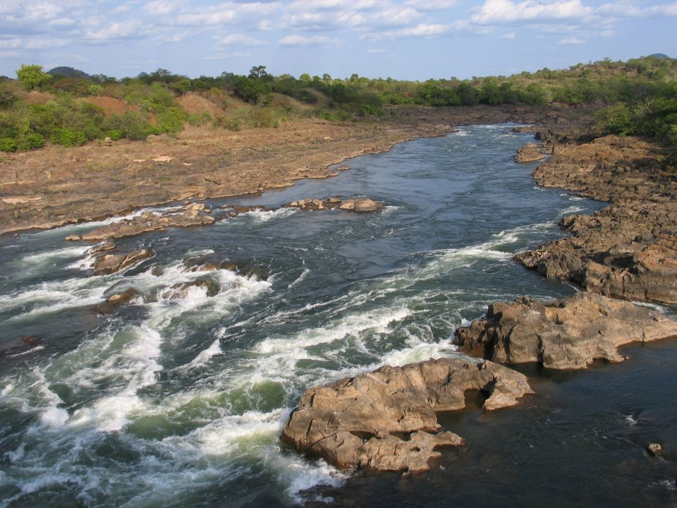
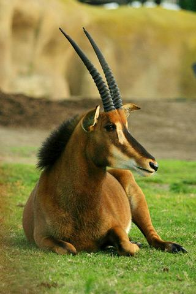

Symbole national
Drapeau de l'Angola
Le drapeau angolais est composé de rouge et de noir, avec une étoile, un engrenage et une machette, symbolisant le sang versé pour la liberté, la matière et les ouvriers.
Cette page est une invitation au voyage à travers mon pays d'origine. Elle présente trois symboles majeurs qui illustrent la richesse naturelle et l'identité de l'Angola.
L'Angola a une histoire riche qui remonte à des royaumes précoloniaux et à des cultures africaines anciennes. Colonisée par le Portugal au XVIe siècle, elle a connu une longue lutte pour l'indépendance, obtenue le 11 novembre 1975. Après une guerre civile prolongée, le pays a retrouvé la paix en 2002 et a depuis entrepris des efforts de reconstruction et de développement économique, tout en célébrant sa diversité culturelle et sa résilience.
Aujourd'hui, l'Angola est reconnue pour ses paysages variés, ses traditions musicales, son art populaire et son histoire de résistance. Cette page met en lumière quelques-uns des symboles les plus forts de cette identité.

Le drapeau angolais est composé de rouge et de noir, avec une étoile, un engrenage et une machette, symbolisant le sang versé pour la liberté, la matière et les ouvriers.

L'Angola est situé sur la côte sud-ouest de l'Afrique, bordé par l'océan Atlantique, la Namibie, la République démocratique du Congo et la Zambie.

Situées dans la province de Malanje, ces chutes comptent parmi les plus imposantes d'Afrique, offrant un spectacle de force et de sérénité.

Berceau de la biodiversité et source majeure d'énergie hydraulique, le Kwanza est le fleuve emblématique qui unit le pays.

L'hippotrague noir géant est une espèce rare et protégée, symbole de la résilience et de la fierté de la nation angolaise.